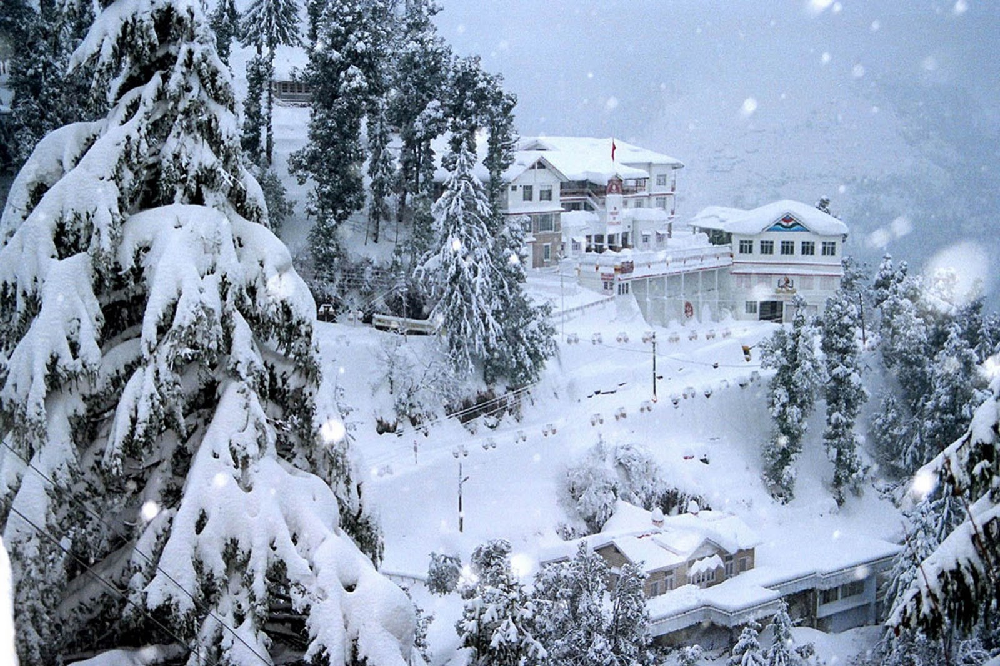
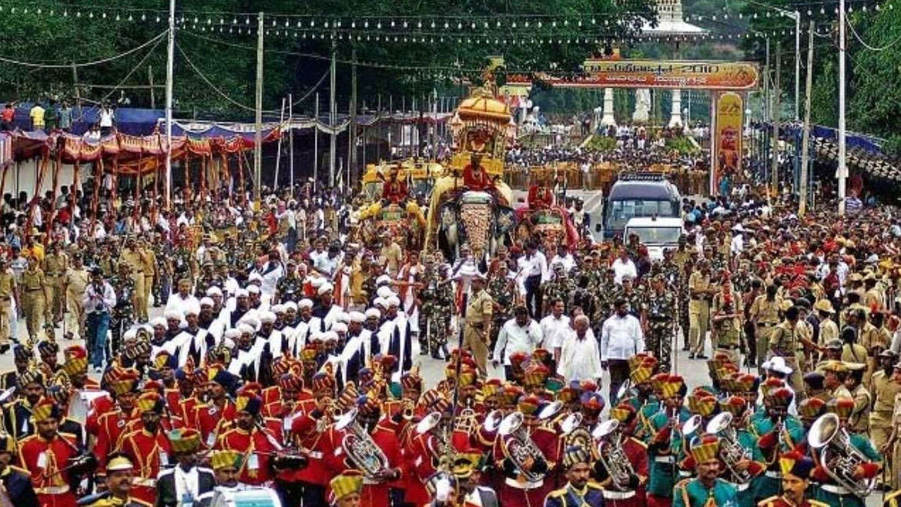
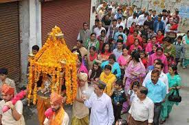
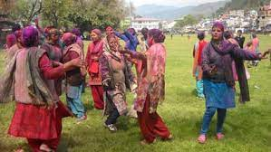
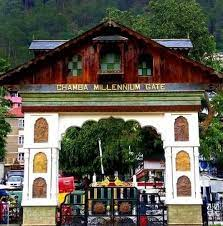

Fairs & Festival in Chamba:
The valley of milk and honey is known for its streams, meadows, temples, paintings, rumal ( handkerchief ) and lakes. Chamba has few rivals for its scenic beauty. Chamba is situated at an altitude of 926 metres. and spreads in the area of 24 km. There are three well defined ranges in the district - The Dhauladhar range, the Pangi or Pir Panjal range and Zanskar range. Located on the banks of the Ravi river the township resembles an Italian village fortress. Chamba's temples are mostly dedicated to Lord Shiva and Vishnu and are built of richy engraved stone. The town is also the base for Gaddi shepherds who, though nomadic in their way of life, return to Chamba periodically to stock supplies. Chamba is so sheltered by snow-clad mountain barriers that its monuments escaped destruction at the hands of invaders, which is why it still remains one of the best preserved heartlands of the Himalayan arts.

Famous Places Around Chamba :
1.Minjar Fair Minjar is the most popular fair of Chamba which is attended by a large number of people from every nook and corner of the district. This mela is held on the second Sunday of the Shravana month. The fair is announced by distribution of Minjar which is a silk tassel worn on some parts of the dress by men and women alike. This tassel symbolises the shoots of paddy and maize which make their appearance around this time of the year. The week long fair begins when the Minjar flag is hoisted in historical Chowgan. The town of Chamba wears a colourful look with every person turning out in best attire. Most part of the Chowgan is converted into markets and people do brisk business during this week. Sports and cultural programmes are organised. On the third Sunday the gaiety, colorfulness and enthusiasm reaches its crescendo when the colourful Minjar procession of the deities accompanied by dancing troupes, traditionally attired locals, traditional drum beaters along with Police and Home Guards band, begins its march from Akhand Chandi Palace for the venue near the Police Lines Nalhora.
A great concourse of people is already assembled there. Earlier the Raja and now the chief guest throws a coconut, a rupee, a seasonal fruit and a Minjar tied in a red piece of cloth - Lohan - as offering to the river. This is followed by all the people throwing their Minjars into the river. Traditional Kumjari-Malhar is sung by the local artists. Betal leaves and ittra are offered to everyone among the invitees as a gesture of respect and festivity. Untill 1943, a live buffalo used to be pushed into the river to propitiate it. It if was carried away and drowned, the event was regarded as propitious, the sacrifice having been accepted. If it crossed the river and reached the other bank, that also was auspicious as it was believed that all the sins of the town were transferred to the other side of the river.

2.Suhi Mela : The fair begins on 15th Chait and lasts till 1st Baisakh. There is an interesting legend regarding circumstances leading to this fair. There being no convenient and sufficient water supply, Raja Sahil Varman was anxious to provide one for the town. He therefore got a water supply scheme made from the Sarota Nallah round the shoulder of the Shah Madar hill, behind the town. Unfortunately, the water refused to take the course, prepared for it. This was attributed to some supernatural cause, keeping in with the superstitious belief of the time. The spirit of the stream must be propitiated and the Brahmans on consultation counseled that either the Rani or her son should be sacrificed.
Another legend regarding this connection that the Raja himself had a dream in which he was ordained to sacrifice his son but the Rani importuned to be accepted as a substitute. The Raja was not prepared to accede to the wishes of the Rani and wanted to offer some one else for the purpose. But the Rani insisted and ultimately her wish prevailed. Accompanied by her maidens and bare-headed, she trekked her way upto the hill to the spot near the village of Balota, where the water course leaves the main stream. There a grave was dug and the Rani was buried alive. The water began to flow as soon as the grave was filled and has ever since flowed smoothly and abundantly.The son and successor of Sahil Varman, Yugakara mentions his mother’s name in the only copper plate of his region as Nenna Devi and she may probably have been the ‘Rani’ referred to. To commemorate this great sacrifice, a small shrine was later erected by her husband on the spot where she is said to have sat down for rest on her way to sacrificial site. A fair was fixed to be held at this place yearly from the 15th of Chait to the 1st of Baisakh. This fair came to be called Suhi Mela and was meant absolutely for women.

3.Holi :This festival is celebrated from 1st Baisakh with the same observances as are customary during the Holi; the only departure being that Hori is held at a different time. It is believed that a Raja may have died during Holi celebrations thereby necessitating the postponement of the festival for ever. Hori was celebrated with much fervour and festivity during the state regime.

4.Rath Rathni : This festival is held at the new moon of Asuj. The rath is a squre frame of wood with a piece of cloth tied round it and is prepared at the Hari Rai temple. The rathni is the figure of a women made up with clothes, and is prepared in the precincts of the Lakshmi Narayan temple. All being ready, the people throw their rakhars (Silk armlets) worn on the day of Rakhar Punya at the rath and then the rath is carried to Chaugan where it is joined by rathni which has been brought from Lakshmi Narayan temple. The two figures are made to touch each other and the bearers then rush apart. The rathni is taken to Champavati temple and the rath is carried through the town, brought back to Chaugan and torn into pieces. The festival seems to be associated with marriage and widowhood but the true significance has been lost in the haze of time.
